Original report · 26–27 September
The pair-programming buddies that hatch from your work are built end to end: the server, the brain on every machine, learning, the economy, the desktop and the phone. Everything is in draft PRs. Nothing is merged.
The core: design, roster and art, server zoo, the pair brain, learning, economy, phone, security hardening. 85 commits.
Stacked on #369: status line, hatch reveal, the four-tab panel, consent, the brain's keys.
A late answer can no longer be typed into the next dialog. Also inside #369.
A tab closes with its last pane; the New Harness form shows launch progress.
The current local lookbook:
Terminal Creatures. Start reading the code at
daemons/README.md.
Look first

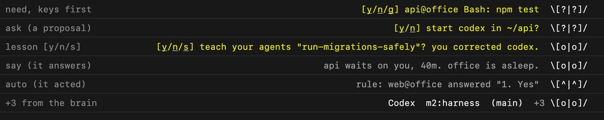

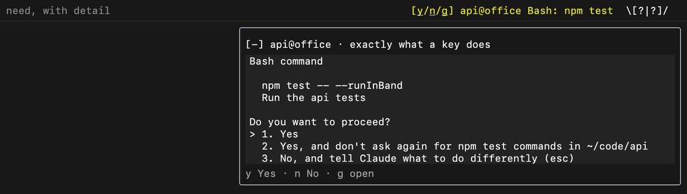

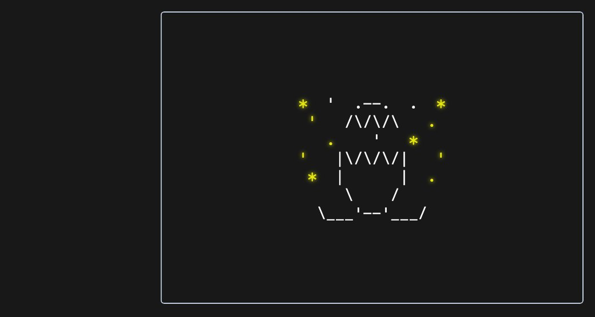

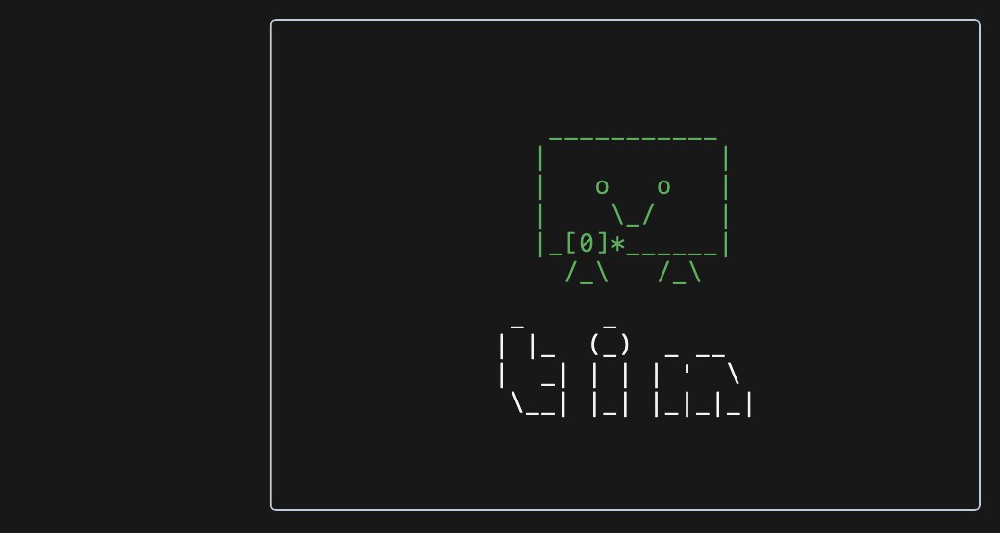

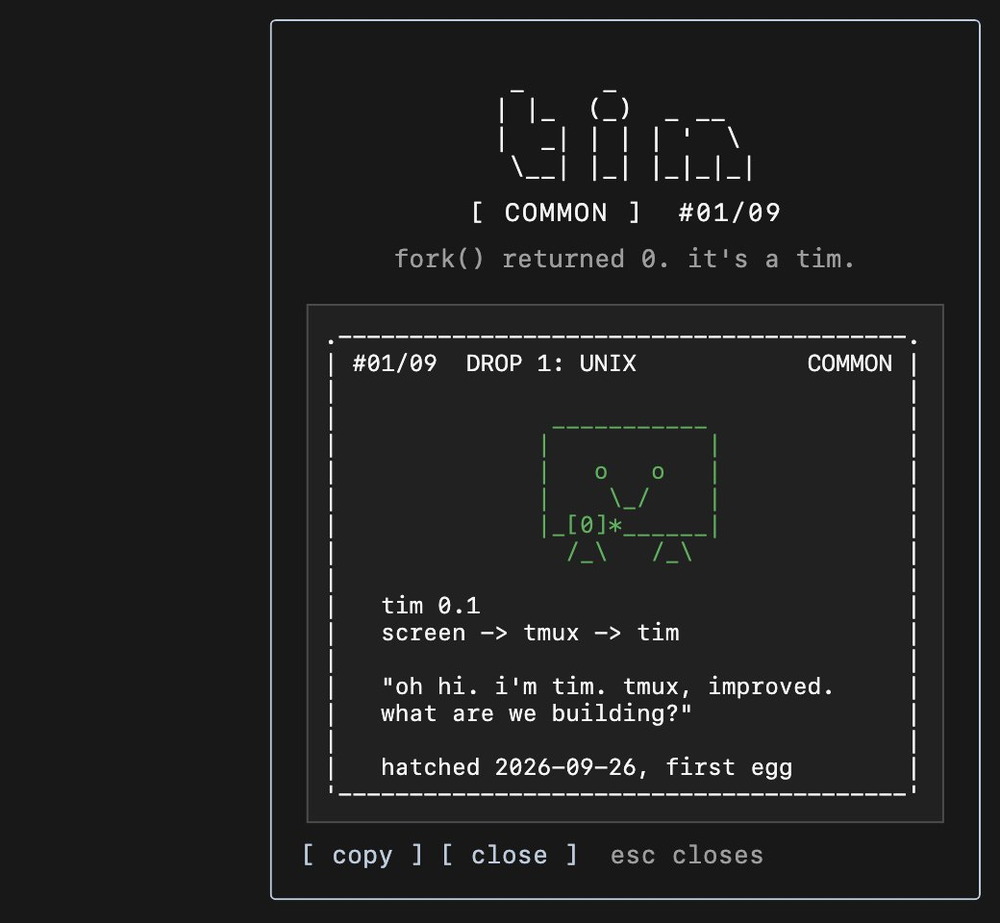
The status line
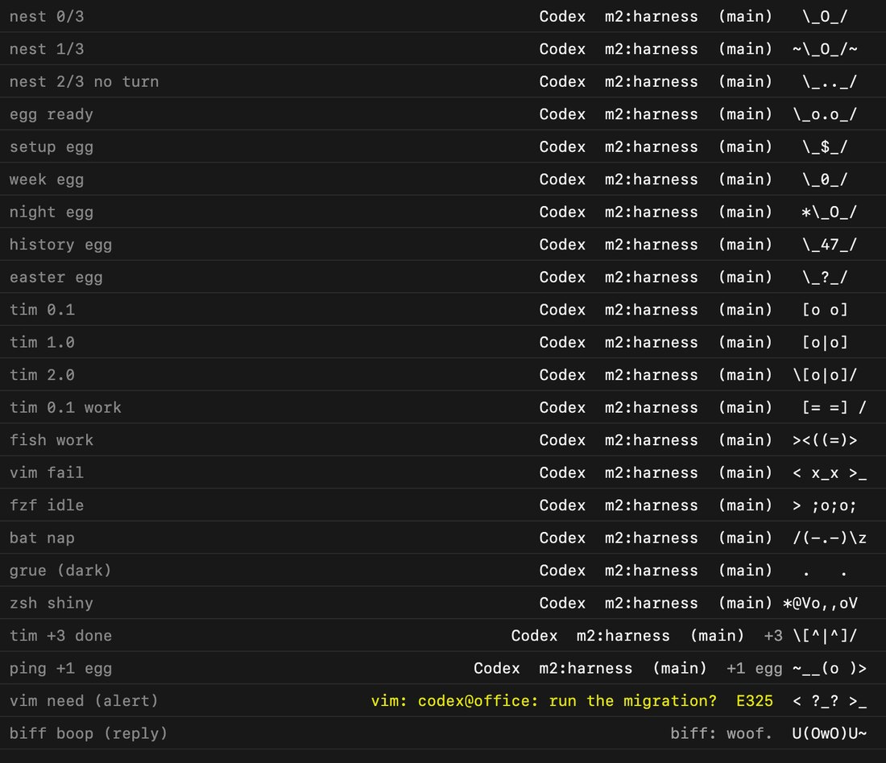
Hatching and growing

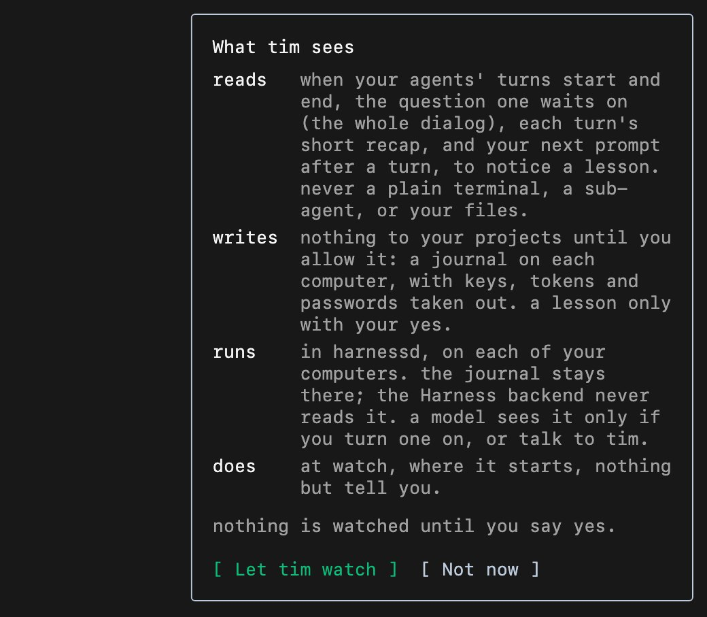

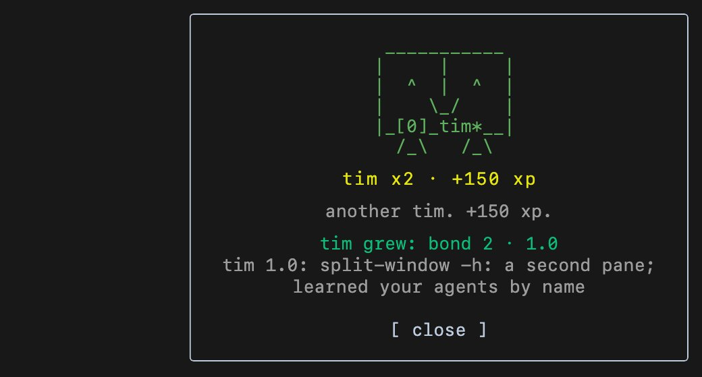
The panel

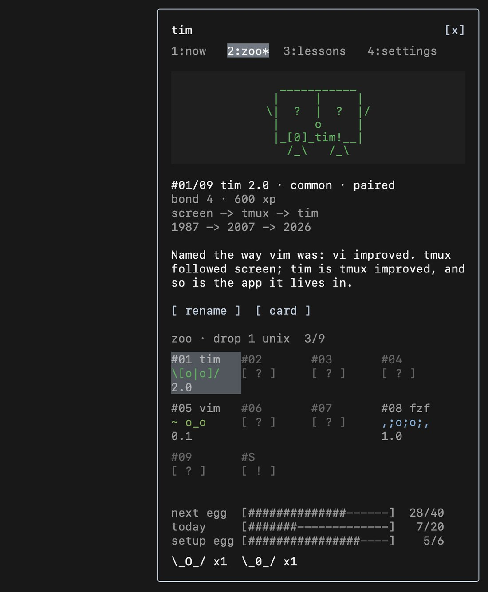

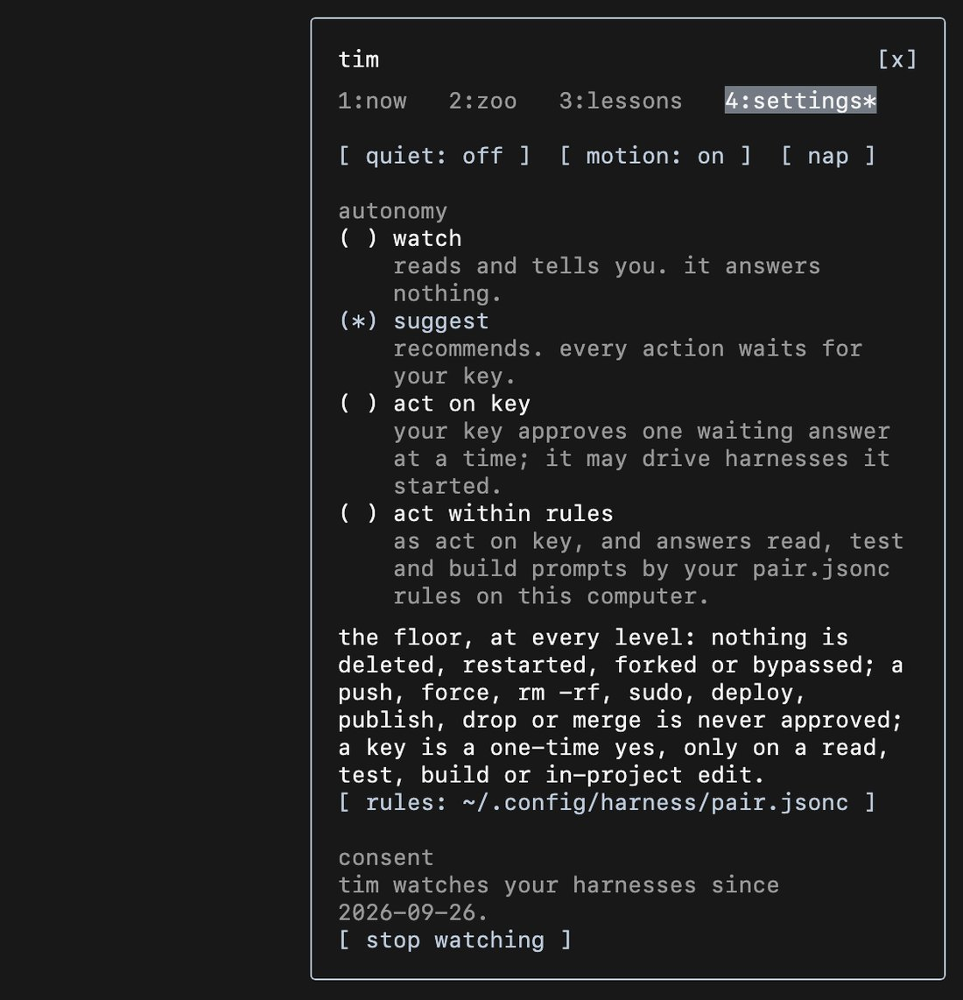
The phone

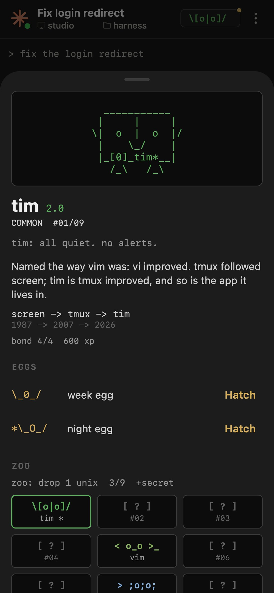

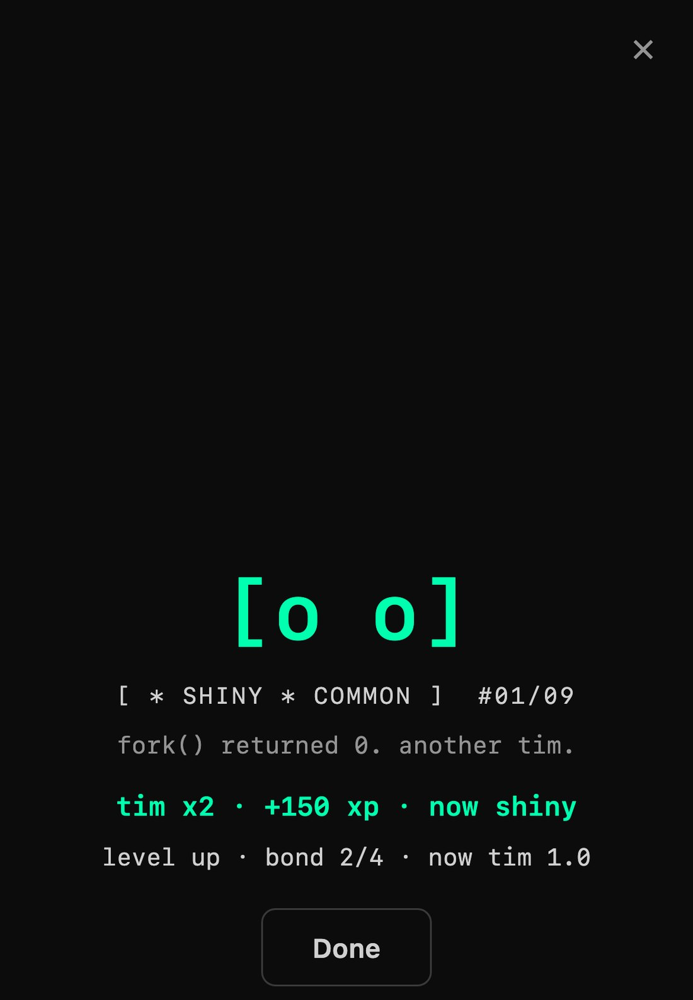

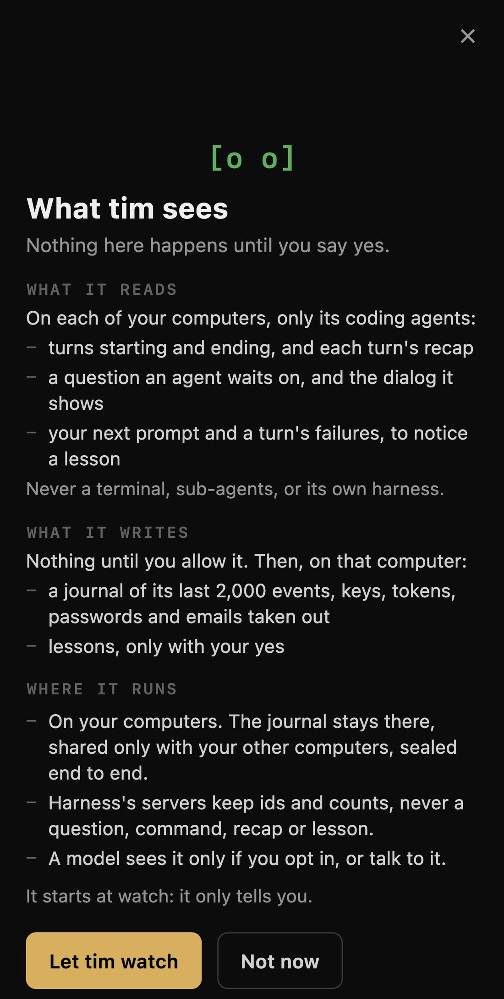
Cards
Text for a code block, SVG for X, previews and a GitHub profile README. A card never shows a live mood.

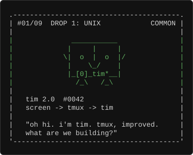
node daemons/tools/card.mjs tim --version 2.0 --svg

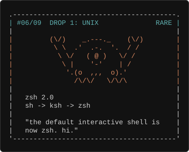

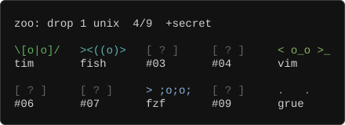
What got built
| area | what |
|---|---|
| design |
daemons/: the contract, roster.json (drop
1 “unix”, three portraits per daemon, slot-template lines), the
reference renderer, banner face, cards, and a generator that checks
every frame and writes the copies and fixtures every client must
match byte for byte.
|
| server | The zoo API, the server-side draw, eggs earned from work, bond and versions, duplicates, mint serials, consent. |
| brain |
Model-free sensing on every machine, triage with one-key answers,
the return brief, harness pair and an MCP server, the
pair harness you can talk to, the autonomy dial and rules.
|
| learning | Notice real signals, propose in one line, teach every agent with SKILL.md only with your yes, revert; borrow, usage, curator and export as opt-ins. |
| security | Two review rounds. One-time yes only on allow-listed prompts (shell tokenizer, realpath); keys valid only for lines a window showed; confirmations for autonomy and rules; lessons need your key and a nonce; redaction; consent first. |
| clients |
Desktop (status line, reveal, panel) and phone (chip, sheet, reveal,
consent). hn later, as agreed.
|
Tests
CLI 5341 passed (TMUX unset, stub tmux) · backend 683 passed · phone 541 passed · desktop daemon tests 195 passed, full desktop suite 3848 passed with the same 24 failures that already fail on the base branch · tsc clean · debug build compiles. The app was never launched against your real account.
Decided for you
You said to pick what is best. Change any of these.
-
Names: daemons, the zoo, “hatch” with
fork() returned 0., andharnessdas the background service's name in UI copy. -
Drop 1 “unix”: tim, fish, ping, bat (common); vim, zsh, biff
(rare); fzf, tldr (legendary); grue (secret,
#S/09, outside the set). - First hour: the first egg after 3 of 8 habits, a finished turn among them; tim is four times as likely from it; a setup egg at 6.
- Eggs from work: a turn egg every 40 counted turns (20 a day, plus one per 10 agent-minutes); week, marathon, night (your agents finishing while you're away) and history eggs.
- Rarity: secrets only from night and easter eggs, guaranteed by the 8th; shiny 1 in 256; duplicates merge (+150 xp); serials minted on the server.
- Voice: silent by default, facts before jokes, one unsolicited line per two minutes at most, no idle animation, blinks only as answers.
- Trust: watch until you say otherwise; model calls opt-in; lessons never go into tracked files by default.
Open questions
- Keep
harnessdas the service's user-facing name? - Are the economy numbers right for real use (3 habits, 40 turns an egg, 20 a day)? They need a week of real play to tune.
-
Approved lessons reach Store-harness sessions and project notes; exporting
to
~/.claude/skillsis opt-in. Should approval export by default? - The brain's keys work only over the Unix socket, so not on Windows yet.
- A public card-verify endpoint for serials, and the bold ideas from the review (collab drops with the fish, fzf and bat maintainers; artisan keycaps): pursue?
Next, as recorded then
- Superseded: the original report proposed testing the desktop build against an installed account. Follow the handoff’s isolated test setup instead; do not launch a review build against real user state.
-
hn: read the same roster, check against the same frames, speak the same daemon frames. - Merge order when ready: #366 and #367, then #369, then #370.